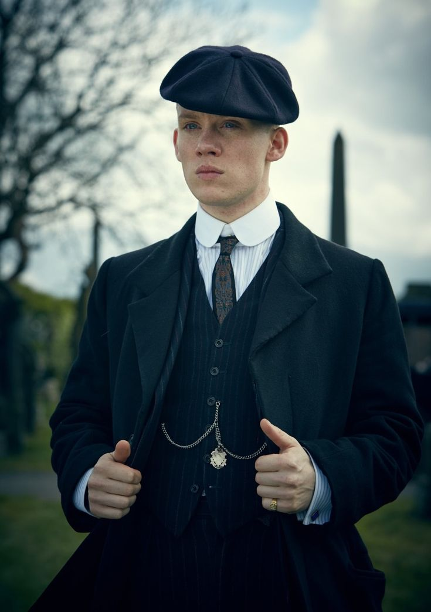

John Shelby

John Michael Shelby (also known as Johnny and John Boy) is one of the two former tritagonists (alongside Polly Gray) of Peaky Blinders.
He was a British street gangster who was a soldier during the First World War. He was the third son of Arthur Shelby Sr, brother of Arthur, Thomas, Ada and Finn Shelby, as well as being the husband of Esme Shelby. John had six children, two sons and two daughters with his deceased first wife Martha Shelby, and two children with Esme, whose genders are unknown. One of his daughters is called Katie Shelby, but his other children’s names are unknown.
John was a high ranking member of the Peaky Blinders, as well as being a 1/3 shareholder of the Shelby Family business, Shelby Company Limited.